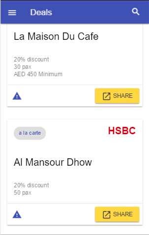
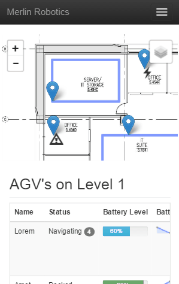
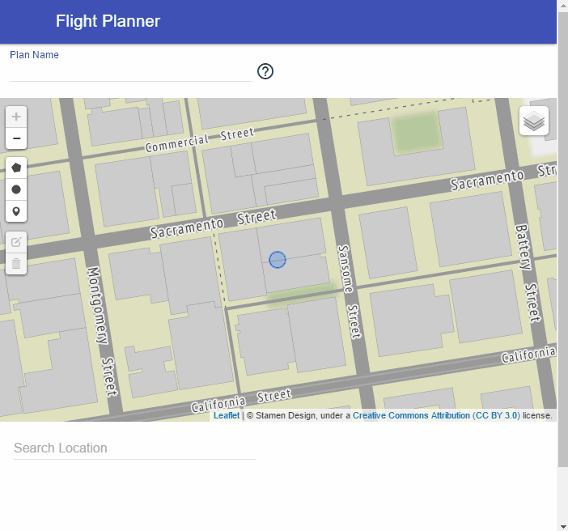
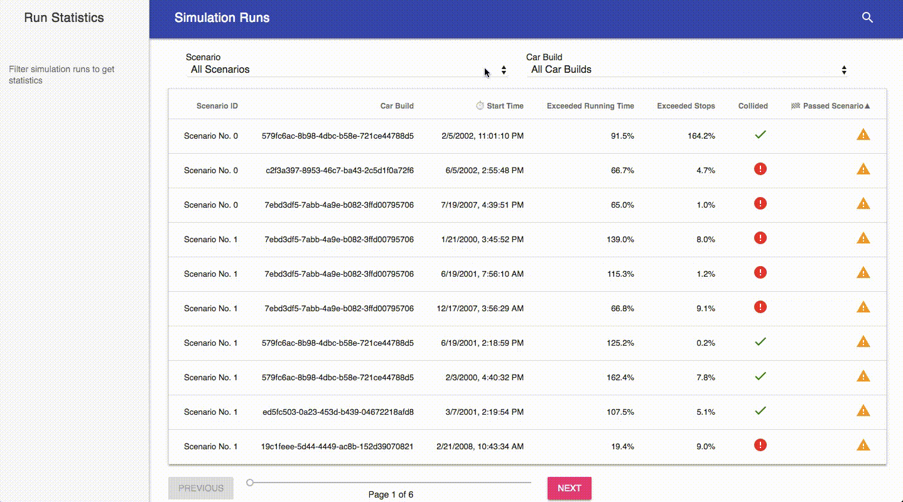

Kuik Pay
The quickest method of performing an offline payment transaction, using minimal hardware infustracture. It consists of a web application which can be used by the payer and payee. The payee scans the QR code which is uniquely generated for the payer.

Dining Deals
Web mobile application which uses the user's current time and location to show only relevant dining deals offered by credit and debit cards. Currently 1700 dining promotions for the United Arab Emirates are available through the application.

AGV Web Interface
A proof-of-concept design exploring a possible management / administrative user experience and interface for a ground robot system. This front end would eventually be connected to a server managing a cluster of autonomous ground vehicles.

Flight Planner
Web based flight planner for photography directors and teams. The application allows users to create plans where dones should take off, land, perform arial maneuvers and enter or avoid zones.

Memory Game
Web implmentation of the classic colour memory game. The server consists of Django and the frontend is built on React. The key feature is a silky smooth animation built using the latest CSS3 capabilities.

Log Viewer
An online log viewer that tabulates and quickly filters data from information collected during autonomous car runs. This information is generated from tools on the car and is analyzed later after multiple runs.